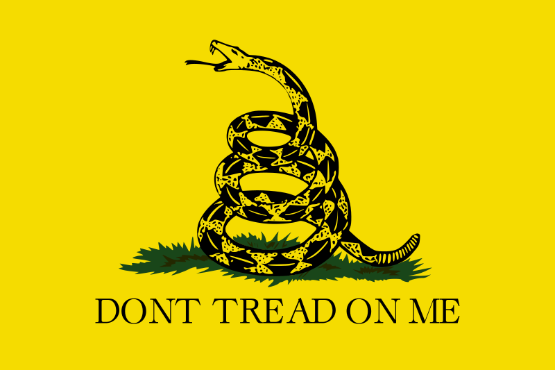

Right-Libertarian

Gadsden flag co-opted by right libertarians
Info
Right-libertarianism, also known as libertarian capitalism or right-wing libertarianism, is a political philosophy and type of libertarianism that supports capitalist property rights and defends market distribution of natural resources and private property. The term right-libertarianism is used to distinguish this class of views on the nature of property and capital from left-libertarianism, a type of libertarianism that combines self-ownership with an egalitarian approach to natural resources. In contrast to socialist libertarianism, right-libertarianism supports free-market capitalism. Like most forms of libertarianism, it supports civil liberties, especially natural law, negative rights, and a major reversal of the modern welfare state.
Right-libertarian political thought is characterized by the strict priority given to liberty, with the need to maximize the realm of individual freedom and minimize the scope of public authority. Right-libertarians typically see the state as the principal threat to liberty. This anti-statism differs from anarchist doctrines in that it is based upon an uncompromising individualism that places little or no emphasis on human sociability or cooperation. Right-libertarian philosophy is also rooted in the ideas of individual rights and laissez-faire economics. The right-libertarian theory of individual rights generally follows the homestead principle and the labor theory of property, stressing self-ownership and that people have an absolute right to the property that their labor produces. Economically, right-libertarians make no distinction between capitalism and free markets and view any attempt to dictate the market process as counterproductive, emphasizing the mechanisms and self-regulating nature of the market whilst portraying government intervention and attempts to redistribute wealth as invariably unnecessary and counter-productive. Although all right-libertarians oppose government intervention, there is a division between anarcho-capitalists, who view the state as an unnecessary evil and want property rights protected without statutory law through market-generated tort, contract and property law; and minarchists, who support the need for a minimal state, often referred to as a night-watchman state, to provide its citizens with courts, military, and police.
While influenced by classical liberal thought, with some viewing right-libertarianism as an outgrowth or as a variant of it, there are significant differences. Edwin Van de Haar argues that "confusingly, in the United States the term libertarianism is sometimes also used for or by classical liberals. But this erroneously masks the differences between them". Classical liberalism refuses to give priority to liberty over order and therefore does not exhibit the hostility to the state which is the defining feature of libertarianism. As such, right-libertarians believe classical liberals favor too much state involvement, arguing that they do not have enough respect for individual property rights and lack sufficient trust in the workings of the free market and its spontaneous order leading to support of a much larger state. Right-libertarians also disagree with classical liberals as being too supportive of central banks and monetarist policies.
Like libertarians of all varieties, right-libertarians refer to themselves simply as libertarians. Being the most common type of libertarianism in the United States, right-libertarianism has become the most common referent of libertarianism there since the late 20th century while historically and elsewhere it continues to be widely used to refer to anti-state forms of socialism such as anarchism and more generally libertarian communism/libertarian Marxism and libertarian socialism. Around the time of Murray Rothbard, who popularized the term libertarian in the United States during the 1960s, anarcho-capitalist movements started calling themselves libertarian, leading to the rise of the term right-libertarian to distinguish them. Rothbard himself acknowledged the co-opting of the term and boasted of its "capture [...] from the enemy". Criticism of right-libertarianism includes ethical, economic, environmental, pragmatic and philosophical concerns, including the view that it has no explicit theory of liberty.It has been argued that laissez-faire capitalism does not necessarily produce the best or most efficient outcome, nor does its philosophy of individualism and policies of deregulation prevent the abuse of natural resources.
Source
Wikipedia